安全模块已从"安全与设备模块-只读-仅参考"移植完成，共包含 19 个功能子模块，涵盖隐患排查、安全检查、事故管理、特殊作业、危险源辨识、安全培训、承包商管理、知识库、职业健康、EHS变更、法规管理、风险报备、定时任务、AI工作流配置等核心功能。
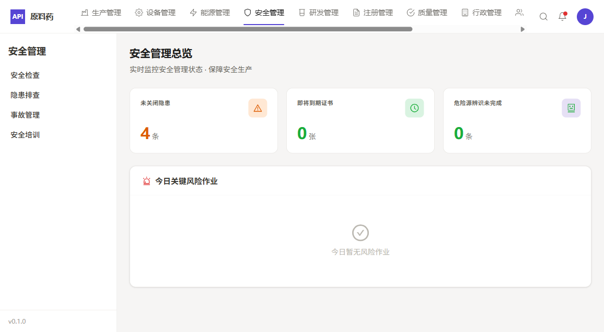
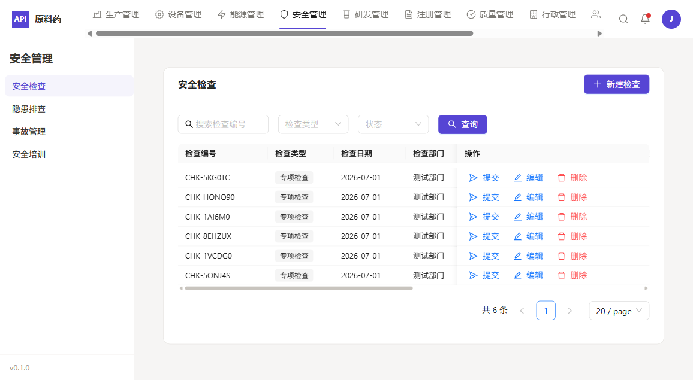
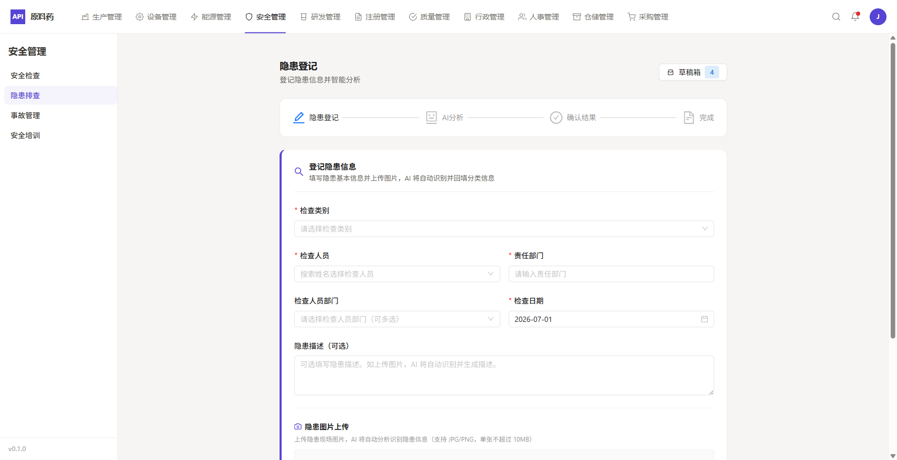
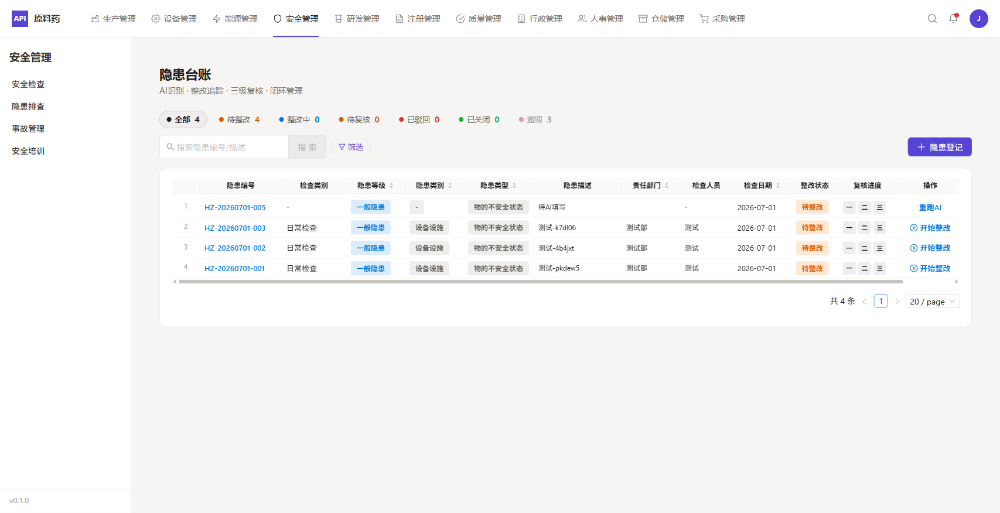
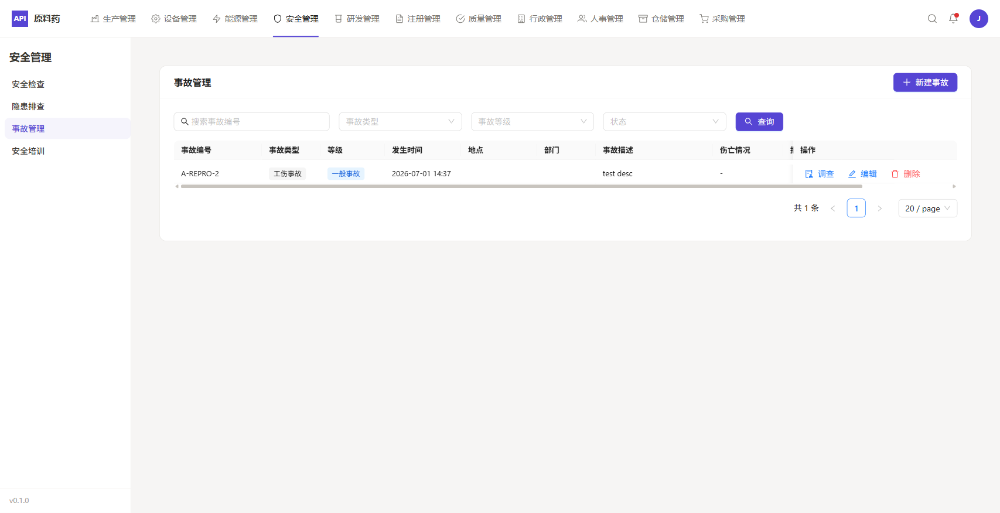
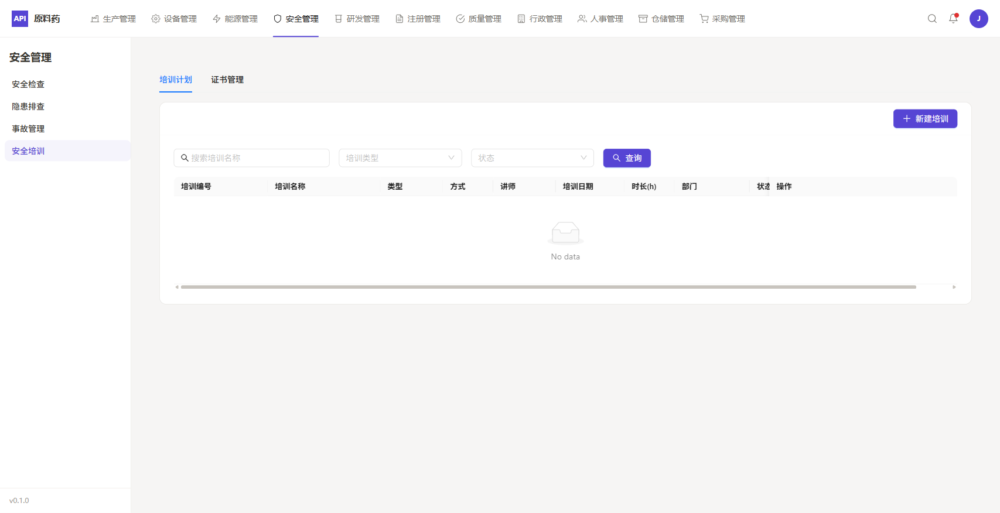
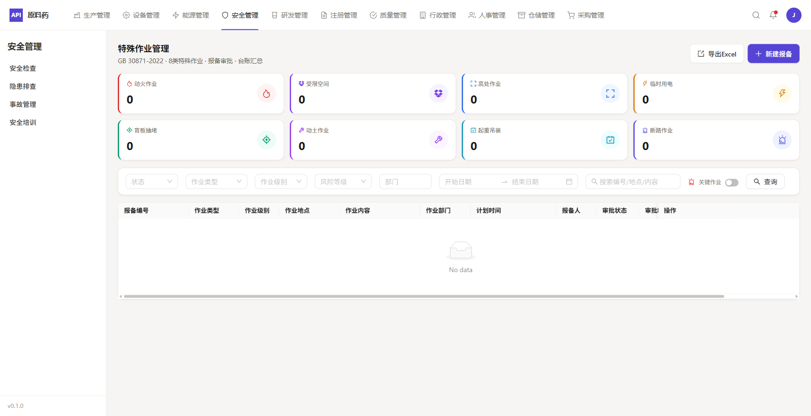
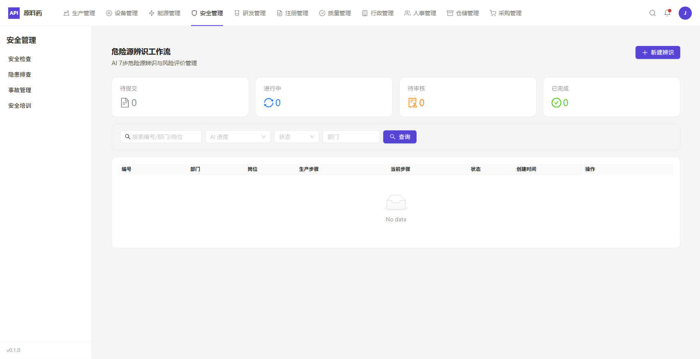
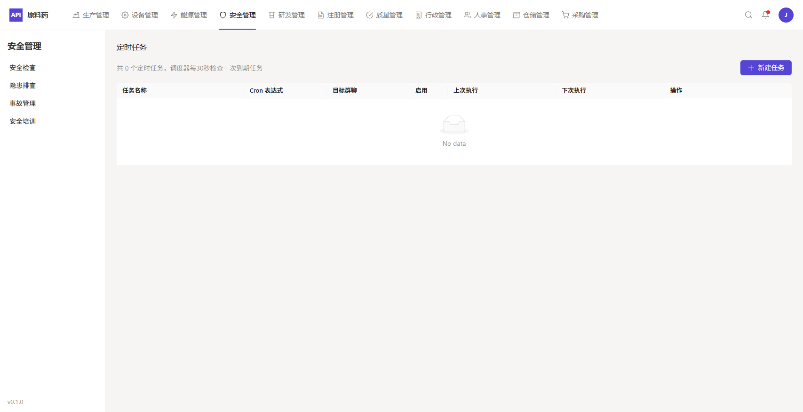
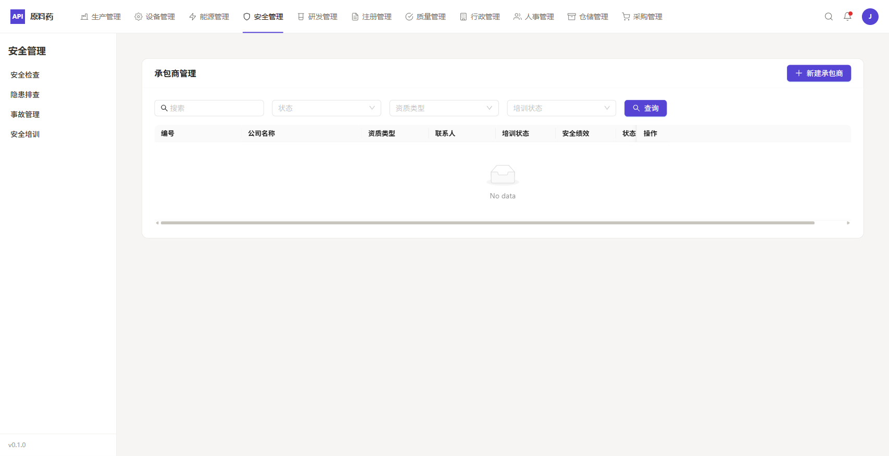
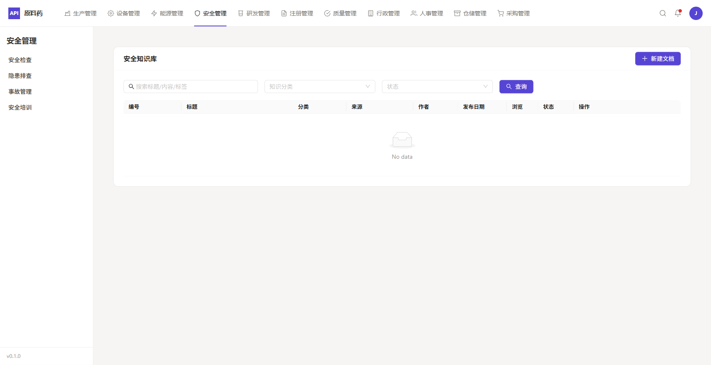
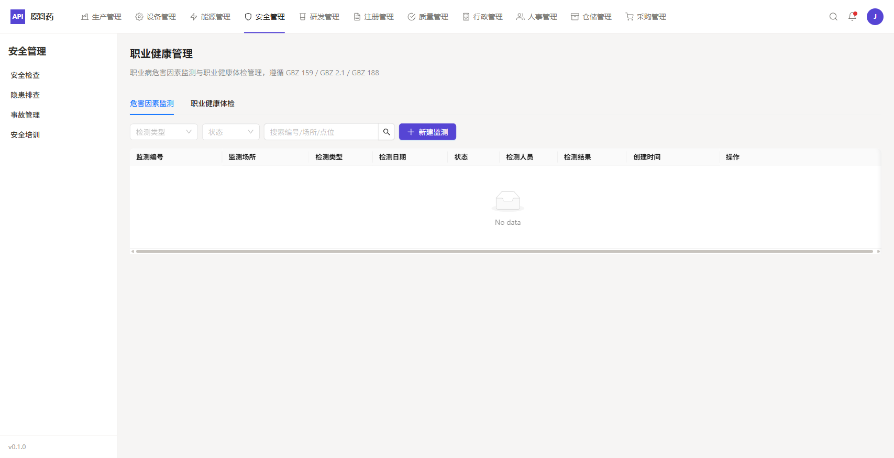
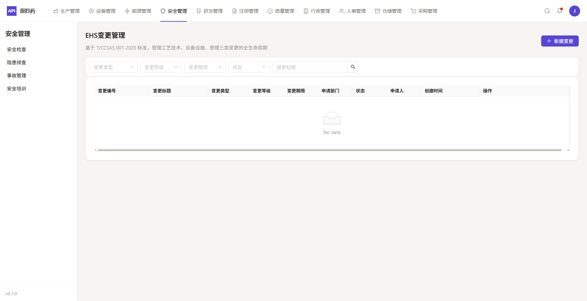
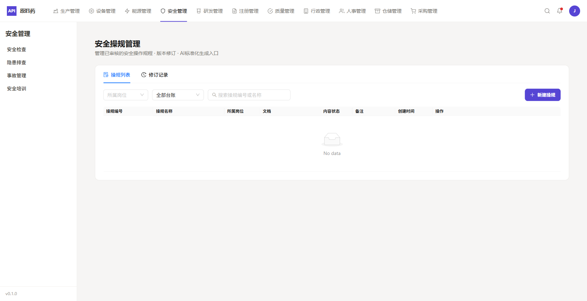
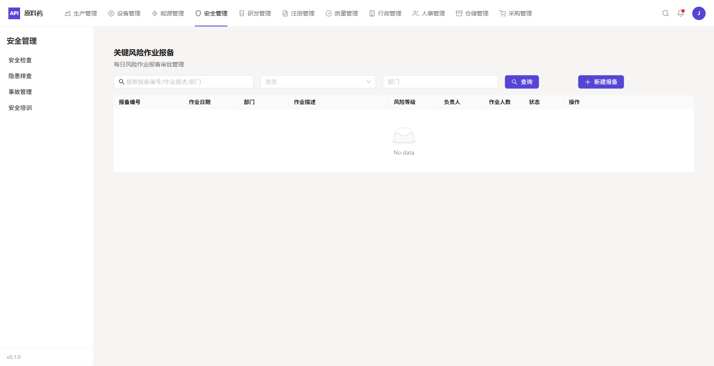
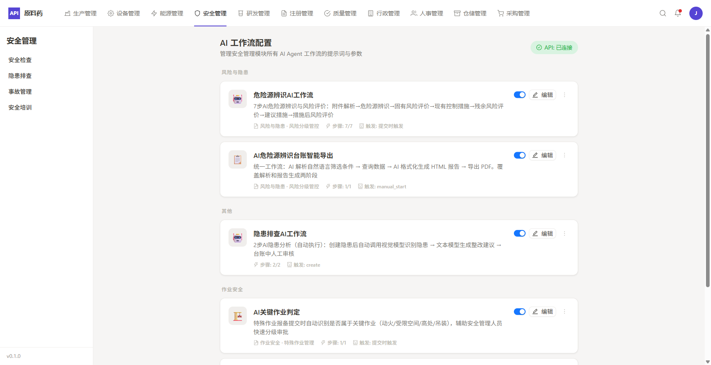
| 功能模块 | 路由 | 状态 |
|---|---|---|
| 仪表盘首页 | /safety | 已移植 |
| 安全检查 | /safety/check | 已移植 |
| 隐患排查 | /safety/hazard | 已移植 |
| 隐患台账 | /safety/hazard-ledger | 已移植 |
| 事故管理 | /safety/accident | 已移植 |
| 安全培训 | /safety/training | 已移植 |
| 特殊作业 | /safety/special-ops | 已移植 |
| 危险源辨识 | /safety/hazard-identification | 已移植 |
| 定时任务 | /safety/scheduled-tasks | 已移植 |
| 承包商管理 | /safety/contractor | 已移植 |
| 安全知识库 | /safety/knowledge-base | 已移植 |
| 职业健康 | /safety/occupational-health | 已移植 |
| EHS变更 | /safety/ehs-change | 已移植 |
| 法规管理 | /safety/regulation | 已移植 |
| 风险报备 | /safety/risk-reporting | 已移植 |
| AI工作流配置 | /safety/ai-workflow-config | 已移植 |